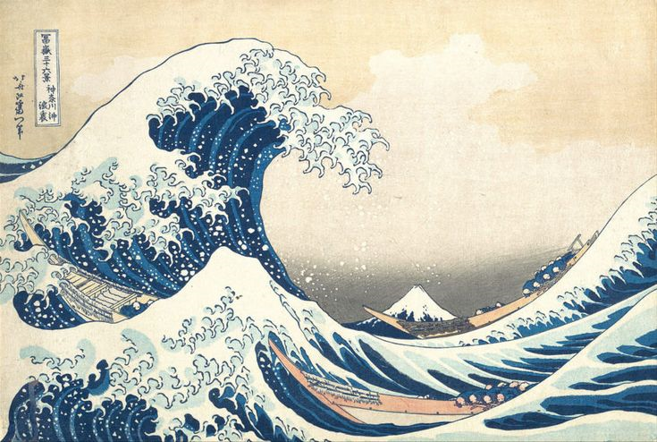

PENANGKAPAN PANGERAN DIPONEGORO
Raden Saleh Syarif Bustaman Dibuat pada :- - 1857Pagi itu di Magelang, suasana terasa menyesakkan. Pangeran Diponegoro datang dengan niat tulus untuk berunding demi perdamaian setelah lima tahun perang yang melelahkan. Namun, kehormatan sang pangeran dikhianati; perundingan itu hanyalah jebakan.
lihat
SUN FLOWERS
Vincent Van Gogh Dibuat pada :20 Agustus 1888Sunflowers dengan penuh semangat selama satu minggu yang sangat produktif. Di dalam "Rumah Kuning" miliknya, ia bekerja cepat menangkap cahaya sebelum kelopak bunga-bunga itu layu, menyapukan warna kuning cerah yang tebal untuk menyambut kedatangan sahabatnya, Paul Gauguin.
lihat
TSUNAMI
Kahsushika Hokusai Dibuat pada - - 1831Di bawah langit pagi yang kelabu, sebuah gelombang raksasa melengkung dengan angkuh, seolah-olah ingin mencengkeram cakrawala dengan ujung buihnya yang menyerupai cakar putih yang ganas. Di tengah amukan laut yang mencekam, tiga perahu nelayan tampak mungil dan tak berdaya, terombang-ambing di antara kekuatan alam yang tak terkendali.
lihat